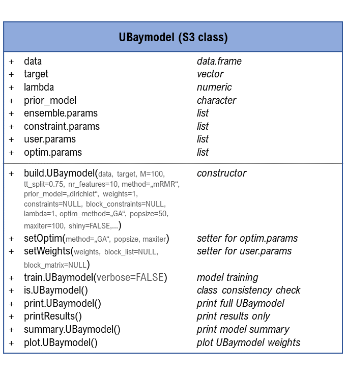

The UBayFS package implements the framework proposed in the article Jenul et al. (2022), together with an interactive Shiny dashbord, which makes UBayFS applicable to R-users with different levels of expertise. UBayFS is an ensemble feature selection technique embedded in a Bayesian statistical framework. The method combines data and user knowledge, where the first is extracted via data-driven ensemble feature selection. The user can control the feature selection by assigning prior weights to features and penalizing specific feature combinations. In particular, the user can define a maximal number of selected features and must-link constraints (features must be selected together) or cannot-link constraints (features must not be selected together). Using relaxed constraints, a parameter ρ regulates the penalty shape. Hence, violation of constraints can be valid but leads to a lower target value of the feature set that is derived from the violated constraints. UBayFS can be used for common feature selection and also for block feature selection.
Documentation and Structure
A documentation illustrates how UBayFS can be used for standard feature selection
UBayFS is implemented via a core S3-class ‘UBaymodel’, along with help functions. An overview of the ‘UBaymodel’ class and its main generic functions, is shown in the following diagram:

Requirements and Dependencies
- R (>= 3.5.0)
- GA
- matrixStats
- shiny
- mRMRe
- Rdimtools
- DirichletReg
- ggplot2
- gridExtra
- utils
- hyper2
- methods
- prettydoc
In addition, some functionality of the package (in particular, the interactive Shiny interface) requires the following depedencies:
- shinyWidgets
- shinyalert
- DT
- RColorBrewer
- shinyjs
- shinyBS
- testthat (>= 3.0.0)
- rmarkdown
- dplyr
- plyr
- knitr
- rpart
- GSelection
- caret
- glmnet
Implementation Details
The original paper defines the following utility function U(δ,θ) for optimization with respect to δ ∈ {0, 1}N: $$U(\boldsymbol{\delta},\boldsymbol{\theta}) = \boldsymbol{\delta}^T \boldsymbol{\theta}-\lambda \kappa(\boldsymbol{\delta})\rightarrow \underset{\boldsymbol{\delta}\in\lbrace 0,1\rbrace ^N}{\max}, $$ for fixed λ > 0.
For practical reasons, the implementation in the UBayFS package uses a modified utility function Ũ(δ,θ) which adds an admissibility term 1 − κ(δ) rather than subtracting an inadmissibility term κ(δ) $$\tilde{U}(\boldsymbol{\delta},\boldsymbol{\theta}) = \boldsymbol{\delta}^T \boldsymbol{\theta}+\lambda (1-\kappa(\boldsymbol{\delta})) = \boldsymbol{\delta}^T \boldsymbol{\theta}-\lambda \kappa(\boldsymbol{\delta}) +\lambda\rightarrow \underset{\boldsymbol{\delta}\in\lbrace 0,1\rbrace ^N}{\max}.$$
Thus, the function values of U(δ,θ) and Ũ(δ,θ) deviate by a constant λ; however, the optimal feature set $$\boldsymbol{\delta}^{\star} = \underset{\boldsymbol{\delta}\in\lbrace 0,1\rbrace ^N}{\text{arg max}}~ U(\boldsymbol{\delta},\boldsymbol{\theta}) = \underset{\boldsymbol{\delta}\in\lbrace 0,1\rbrace ^N}{\text{arg max}}~ \tilde{U}(\boldsymbol{\delta},\boldsymbol{\theta})$$ remains unaffected.
Installation
The development version of the package can be installed with:
remotes::install_github("annajenul/UBayFS", build_manual = TRUE, build_vignettes = TRUE)If you use a macOS operator system, make sure you have XQuartz installed.
To build the vignettes, Pandoc is required. It may happen that Pandoc is missing on your computer, or that the version is too old. Then the installation will return the error
Pandoc is required to build R Markdown vignettes but not available. Please make sure it is installed.An installation guide for Pandoc on different operation systems is provided here.
Contributing
Your contribution to UBayFS is very welcome!
Contribution to the package requires the agreement of the Contributor Code of Conduct terms.
For the implementation of a new feature or bug-fixing, we encourage you to send a Pull Request to the repository. Please add a detailed and concise description of the invented feature or the bug. In case of fixing a bug, include comments about your solution. To improve UBayFS even more, feel free to send us issues with bugs, you are not sure about. We are thankful for any kind of constructive criticism and suggestions.
Citation
Jenul, A., Schrunner, S., Pilz, J. et al. A user-guided Bayesian framework for ensemble feature selection in life science applications (UBayFS). Mach Learn (2022). https://doi.org/10.1007/s10994-022-06221-9